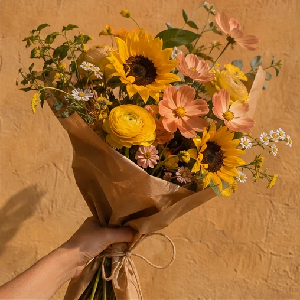

Flores para dizer o que importa.
Comece pelo gesto. A vitrine reúne buquês para celebrar, agradecer ou demonstrar carinho.
Encontrar meu buquê
Comece pelo gesto. A vitrine reúne buquês para celebrar, agradecer ou demonstrar carinho.
Encontrar meu buquê